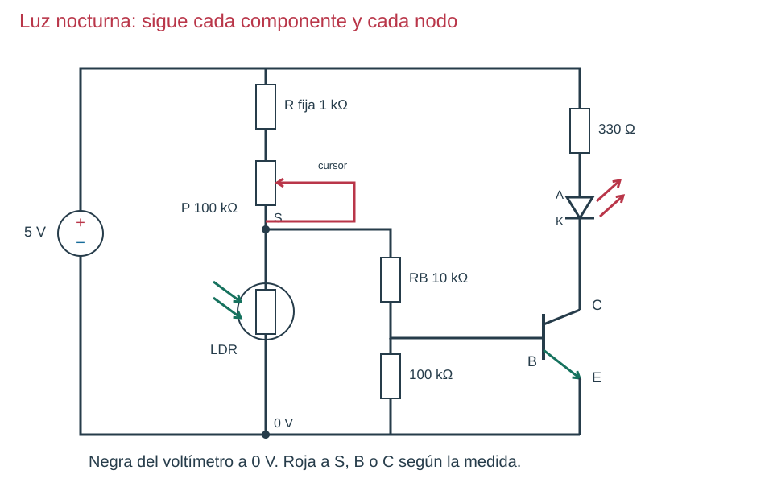
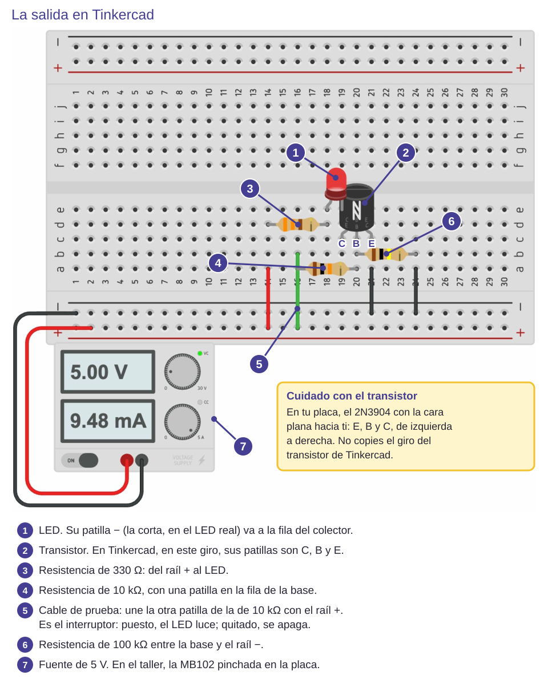
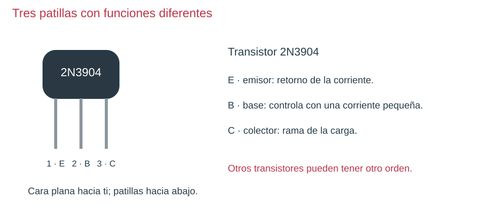
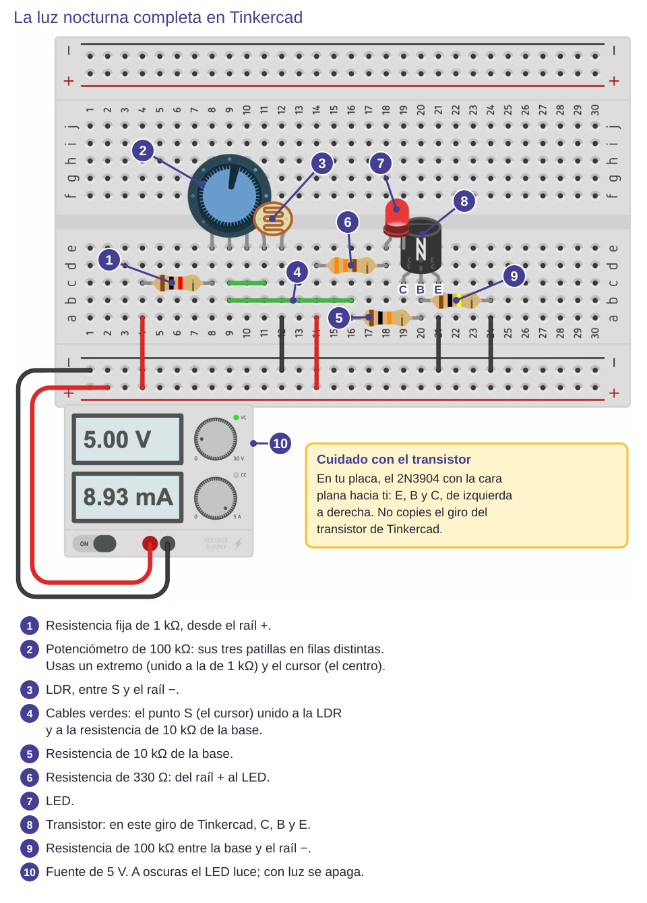

Contenido

Parte 1 · La salida: transistor y LED
Tu equipo recibe en la placa la salida ya montada, a partir de la fila 18: el mismo circuito que hiciste en Tinkercad (+ → 330 Ω → LED → C; E → −; 100 kΩ entre B y E). Así se ve en Tinkercad sobre una protoboard, con la resistencia de 10 kΩ y el cable de prueba que usarás para comprobarla:


- Sin fuente, sigue con el dedo cada pieza en la placa y localízala en el esquema.
- Para probarla, pincha la resistencia de 10 kΩ con una patilla en la fila de la base. Un cable desde su otra patilla hasta el raíl + hace de interruptor: puesto, cerrado; quitado, abierto.
- Enciende la fuente: con el cable puesto, el LED luce; al quitarlo, se apaga. Apaga la fuente.
Antes de seguir: predice
Vas a medir en tres condiciones. Para que tus medidas se puedan repetir, hazlas siempre igual:
- Luz: la LDR destapada, sin hacerle sombra.
- Sombra: tu mano abierta a unos 10 cm por encima de la LDR.
- Oscuridad: la LDR tapada con el dedo.
Predice y escríbelo en el apartado 6.2 del informe: al pasar de luz a oscuridad, ¿la salida S subirá o bajará? Piensa en dónde está la LDR en el divisor.
Parte 2 · El sensor y el ajuste
- Con el polímetro en Ω 200k, mide la LDR sola con luz y después tapada con el dedo (si sale un «1», sube a 2M). Anota los dos valores.
- Con el polímetro en Ω 200k, mide el potenciómetro entre un extremo y el cursor mientras lo giras: la resistencia tiene que cambiar.
Parte 3 · El divisor solo
- Sin fuente: + → resistencia fija de 1 kΩ → potenciómetro de 100 kΩ (un extremo y el cursor) → S → LDR → −. Deja la base sin conectar.
- Enciende la fuente. Polímetro en V⎓ 20: roja en S y negra en el −.
- Comprueba tu predicción: tapa y destapa la LDR y mira si S sube o baja. Gira el potenciómetro y mira cómo cambia. Apaga la fuente.
La resistencia fija de 1 kΩ evita que, si giras el potenciómetro hasta el final, la parte de arriba se quede en 0 Ω.
Parte 4 · Unir y ajustar

- Sin fuente, quita el cable de prueba (el interruptor) y une S con la patilla libre de la resistencia de 10 kΩ de la base.
- Enciende la fuente. Gira el potenciómetro poco a poco hasta que el LED cambie claramente entre luz y sombra.
- Mide S, VCE y la tensión de la de 330 Ω con luz, en sombra y a oscuras, hechas como antes.
Al unir la base, S baja respecto a la parte 3: el transistor es una carga para el divisor, igual que la resistencia que conectaste a la salida del divisor en Tinkercad. El LED irá encendiéndose poco a poco al oscurecer, no de golpe.
| Lo que ves | Qué compruebas |
|---|---|
| El LED no luce nunca | Vuelve a la parte 1: ¿funciona la salida con el cable de prueba? Si funciona, mide S a oscuras. |
| El LED luce siempre | Gira el potenciómetro para aumentar la resistencia de arriba y mira cómo baja S. |
| S cambia pero el LED casi no | Mide VCE y la tensión de la de 10 kΩ: quizá llega poca corriente a la base. |
Equipo: copiad S, VCE y la tensión de la de 330 Ω en las filas de la LDR (luz, sombra y oscuridad) del apartado 2 de la Comprobación del equipo.
Ahora tú. Informe, apartado 6.2: tu predicción (¿S sube o baja?), la tabla con S, VCE y la tensión de la de 330 Ω en luz, sombra y oscuridad, la corriente del LED en cada caso y el intercambio de hoy con tu compañero.
Ver solución
Al tapar la LDR su resistencia sube y, como está abajo, S sube. La corriente del LED es la tensión de la de 330 Ω dividida entre 330. Lo esperable: a oscuras S y la corriente del LED son mayores y VCE es menor que con luz.
Compruébalo
Ordena las partes del montaje de la luz nocturna.
- Probar la salida (transistor y LED) con el cable de prueba
- Medir la LDR y el potenciómetro sueltos, sin fuente
- Montar el divisor solo y medir S tapando y destapando la LDR
- Unir S a la base por la resistencia de 10 kΩ
- Girar el potenciómetro hasta que el LED cambie entre luz y sombra